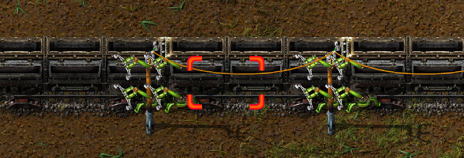

Belts have a maximum throughput of 45 items, per tile, per second.
What about trains?

Trains can be stacked on 2 vertical/horizontal track pieces, or 3 diagonal ones.
When stacked on axis-aligned tracks, you can add 4 stack inserters between them. That's a hefty throughput of 4*12*2.31=110.88 items per second.
A track is two tiles wide, so per-tile it'd still reduce by a factor of 2 => 110.88 / 2 = 55.44.
That's still twice the efficiency of chest-to-chest transport.
And there's the fun fact that items are transported across distances faster as well, since a train is longer than a regular chest!
It's possible to make turns without loosing out on throughput as well. Above are two examples of right-hand turns.
If half throughput is OK then a simple crossing is possible. For full throughput, put then in a 2x2 grid.
INFINITE lanes for different items!
By setting filters on the stacks in the cargo wagons, it's possible to use the "belt" for transport of many things. The total throughput will be limited, but it's cool, so why not.
Chronological (or something ¯\_(ツ)_/¯ )
- Next: Notes on debug symbols
- Prev: Factorio designs, pt 1
- Prev: Factorio designs, pt 1